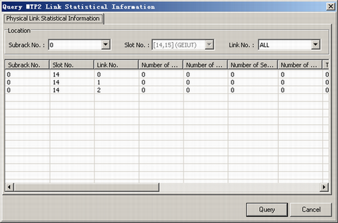

This describes how to query the usage of MTP2 links through querying MTP2 link statistics.
Prerequisites
- The LMT runs normally.
- The communication between the LMT and the BSC is normal.
- The GEIUT and the GOIUT are functional.
Context
The MTP2 statistics include: Subrack No., Slot No., Link No., Number of Sent SIF&SIO Octets, Number of Resent SIF&SIO Octets, Number of Sent Message Signal Units, Number of Resent Message Signal Units, Total Received SIF&SIO Octets, Number of Received Message Signal Units, Link Work Time, Local Busy Time, Number of Signaling Link Alignment of Verification Failures, Number of Received Error Signal Units, Number of Received Good SIF&SIO Octets, and Number of Received Negative Acknowledge Messages.
Procedure
- On the LMT, choose .
- Set parameters in the Location area, and then click Query. The query results are displayed, as shown in Figure 1.
Figure 1 Results of querying MTP2 link statistical information
Copyright © Huawei Technologies Co., Ltd.